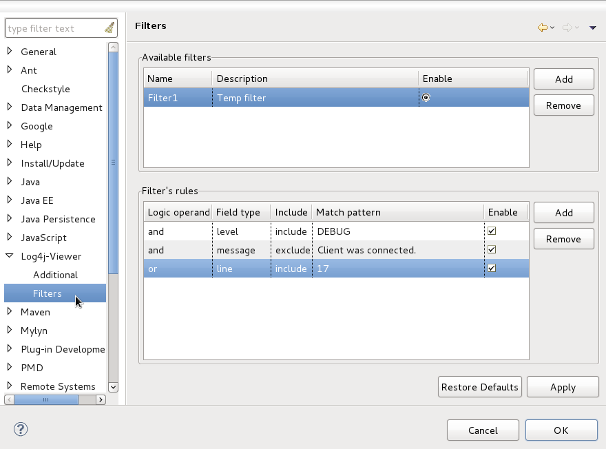
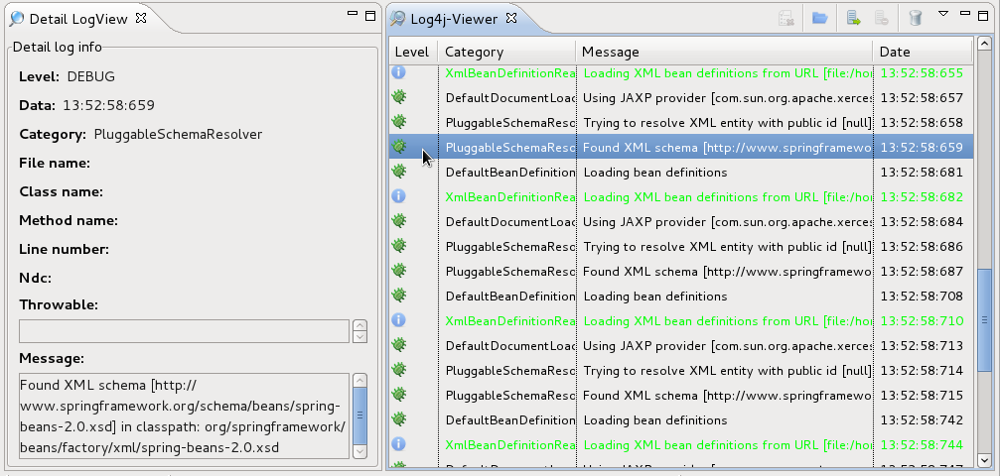

| Installation |
| Usage |
Main Preferences |
Main preferences are devided into 3 parts:
Additional Preferences |
Additional preferences are devided into 2 parts:
Filters |

LogView Overview |
When we select any log in LogView table, Detail LogView is opened and displays more detail information about log:

When an error occurs, while working with Log4j-viewer, the error button becomes enabled:
When press on this button, an error view opens and the error button becomes disabled, so the user will be always notified about a new error: